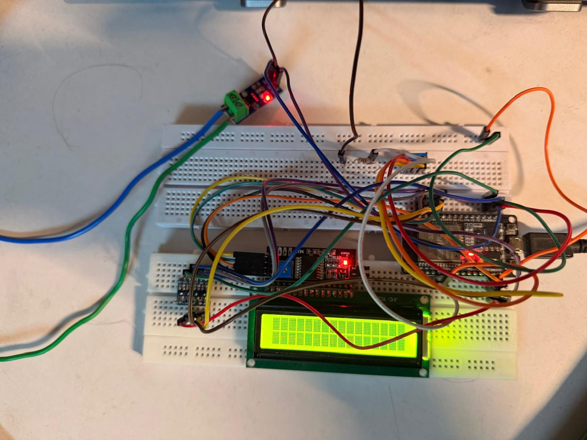

ESP32, Current Sensor, LCD Display and Breadboard Setup
The Smart Energy Meter project is developed to monitor electricity consumption in real-time using sensors, ESP32 microcontroller, and web dashboard technology.
The hardware module consists of ESP32, ACS712 current sensor, 16x2 LCD display, breadboard, and connecting wires.
The system continuously collects live data such as current, power consumption, and total energy units used by connected appliances.
Based on the real-time readings, the meter automatically calculates electricity bill cost according to tariff rates and predicts future monthly expenses using AI/ML logic.
This system helps users reduce electricity wastage, save money, identify abnormal energy usage, and improve overall efficiency.
Users can access live data remotely through dashboard panels, reports, and smart analytics from anywhere.